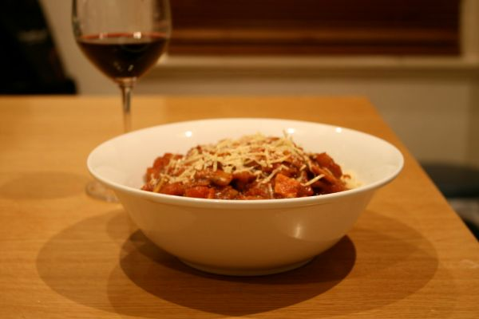

Pasta with Four-Cheese Sauce

Photo: docbaty (CC BY 2.0)
Penne or rotelle noodles served with a stovetop four-cheese sauce made from Parmesan, Swiss, cream cheese, and blue cheese in a milk-and-flour base seasoned with garlic and pepper.
Directions
- Cook noodle in salted boiling water until just tender (about 10 minutes) Drain and set aside.
- Add flour to small nonstick saucepan. Slowly stir in 1/4 cup of the milk and stir until smooth. Slowly stir in remaining milk. Heat mixture over medium low heat, stirring constantly until just beginning to thicken (about 2 minutes).
- Add garlic, Parmesan, Swiss cheese, cream cheese and blue cheese to saucepan with milk mixture. Continue to cook over low heat, stirring constantly until all ingredients are melted and mixture is reasonably smooth. If it is too thick, add a tablespoon or two of milk and stir. Add white or black pepper to taste.
- Cook the noodles in salted boiling water until just tender (about 10 minutes). Drain and set aside.
- Add the flour to a small nonstick saucepan. Slowly stir in 1/4 cup of the milk and stir until smooth, then slowly stir in the remaining milk.
- Heat the mixture over medium-low heat, stirring constantly, until just beginning to thicken (about 2 minutes).
- Add the garlic, Parmesan, Swiss cheese, cream cheese, and blue cheese to the saucepan with the milk mixture. Continue to cook over low heat, stirring constantly, until all ingredients are melted and the mixture is reasonably smooth.
- If it is too thick, add a tablespoon or two of milk and stir. Add white or black pepper to taste.
Goes well with
https://lizotte.cool/recipe/pasta-with-four-cheese-sauce.html